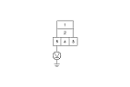
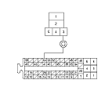

A/C Condenser Fan High Speed Circuit Troubleshooting
NOTE:
Do not use this troubleshooting procedure if the radiator fan and/or the A/C compressor is inoperative. Refer to the symptom troubleshooting index.
Before doing symptom troubleshooting,
check for powertrain DTCs.
Remove the fan control relay from the under-hood fuse/relay box, and test it.
Is the relay OK?
YES
-
Go to
Step 2
.
NO
-
Replace the fan control relay .■
Turn the ignition switch ON (II).
Measure the voltage between the fan control relay 5P socket terminal No. 5 and body ground.
Is there battery voltage?
YES
-
Go to
Step 4
.
NO
-
Replace the under-hood fuse/relay box.
■
Turn the ignition switch OFF.

Check for continuity between the fan control relay 5P socket terminal No. 2 and body ground.
Is there continuity?
YES
-
Go to
Step 6
.
NO
-
Check for an open in the wire between the fan control relay and body ground.
If the wire is OK, check for poor ground at G301.
■
Turn the ignition switch ON (II).
Jump the SCS line with the HDS.
NOTE: This step must be done to protect the engine control module (ECM) from damage.
Turn the ignition switch OFF.
Disconnect ECM connector No. 2 (58P).
Check for continuity between the fan control relay 5P socket terminal No. 3 and ECM connector No. 2 (58 P) terminal No. 54.
Is there continuity?
YES
-
Check for loose wires or poor connections at ECM connector No. 2 (58 P). If the connections are good, substitute a known-good ECM, and recheck.
If the symptom/indication goes away, replace the original ECM.
■
NO
-
Repair open in the wire between the fan control relay and the ECM.■
